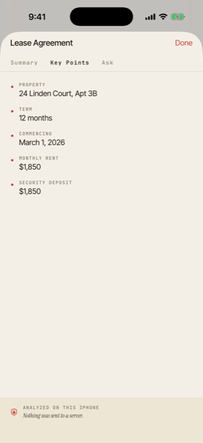
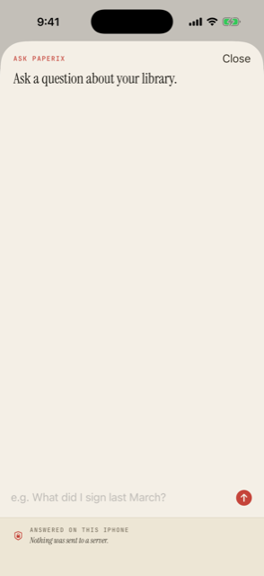
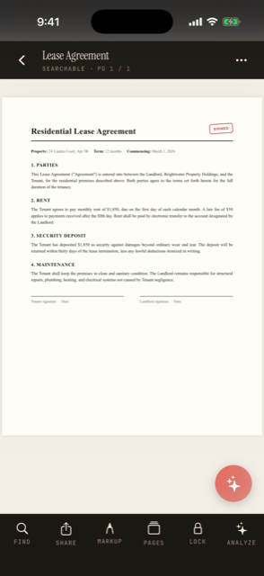

Everything a scan can be,
and nothing it shouldn't.
Scan, search, read, edit, summarize, and ask — every step on your device. The AI is Apple Intelligence on the Neural Engine; the search index is local; the only thing that ever leaves is an optional iCloud sync through your own Apple account.




screens captured on the iPhone 17 Pro simulator with seeded scans
Scanning
One-tap scan
The + button opens the document camera directly. Multi-page scans combine into one PDF.
Auto-enhance
A post-capture pass nudges contrast and gently deskews tilted pages. On by default.
Black & white mode
High-contrast output for receipts, faint print, and signed documents.
Import from Photos
Pull up to 20 existing photos — each gets edge-detect, perspective correction, and OCR, just like a fresh scan.
Import from Files
Pull PDFs or images from Files, iCloud Drive, Dropbox. PDFs come in as-is; images get auto-cropped and OCR'd.
Auto-name from content
Suggests a filename from the largest text on the first page, so a new scan lands as "Lease Agreement", not a timestamp.
OCR & search
On-device OCR
Every new scan gets text recognition, embedded as an invisible PDF layer so it's searchable everywhere.
Searchable old scans
One-tap OCR backfill for PDFs created before OCR existed, or imported without a text layer.
Full-text search
Find any word across every scan — name and contents. Tap a result to jump to the matched page with the text highlighted.
In-document search
Find a word inside one open document; press Return to jump to the next match.
On-device AI — Apple Intelligence
Analyze a document
An AI summary, key points, and a follow-up Q&A about any scan. Reads a column-preserving rendering of the page so receipts and forms don't scramble. Long-press to copy.
Ask Paperix
Ask in plain language and get an answer pulled from your whole library, with tappable citations back to the source page.
Semantic search
An on-device embedding index matches by meaning, not just keyword overlap — built incrementally and persisted, so unchanged docs aren't re-processed.
Editable AI prompts
Customize the system and user prompts for Summary, Key Points, and Ask. A CUSTOM badge shows when you've diverged; reset one or all.
Hidden when unavailable
On devices without Apple Intelligence the AI surfaces hide cleanly with a one-time card. Everything else works the same.
Edit
Edit pages
Reorder by dragging, rotate, and delete individual pages. Saves back to the original PDF with the OCR layer intact.
Markup & sign
Pen, eraser, undo, redo, clear — real ink colors and pinch-to-zoom for tight signatures. Re-runs OCR after save so search still works.
Type on a page
Drop a text box anywhere, resize, pick a size and anchor. One-tap presets insert today's date or your saved name for forms.
Reprocess saved scans
Re-apply Color, Black & White, or Maximum Punch to a scan you already saved — no need to rescan.
Organize
Folders
Group scans by project or topic. Scanning from inside a folder drops the new scan there.
Move & bulk select
Move one or many scans between folders or back to the root; multi-select to delete, share, or move at once.
Sort & rename
Newest, oldest, or name A→Z / Z→A. Rename inline from a row or inside a document.
Recently Deleted
Soft delete with a 30-day restore window, then automatic permanent purge.
Share & export
Share anywhere
The standard iOS share sheet — Mail, Messages, AirDrop, Files, anywhere.
Password-protected export
Encrypt a single doc with a password before sharing. Paperix never stores or transmits it — and it can't recover it.
AirPrint to any compatible printer on your network.
Copy text
Pull the OCR'd text to the clipboard for pasting elsewhere.
Smart actions
Smart actions banner
After a scan, Paperix surfaces follow-ups found in the text — contacts, dates, addresses, links, receipt totals — to add to Contacts/Calendar, open in Maps/Safari, or copy. On-device; quiet when there's nothing.
Receipt totals
Scan a receipt and Paperix reads the labeled grand total (skipping subtotal and tax). One tap copies the amount and currency.
Evaluate any scan
Run the same detection on an older scan or imported PDF, with an explicit "nothing found" state when there's no follow-up.
Privacy & platform
Zero network
No SDKs, no analytics, no telemetry — the app has no networking code of its own and never phones home. Verifiable with Little Snitch or Lulu.
Face ID / passcode lock
Re-authenticate every time you reopen Paperix. Opt-in.
iCloud sync — opt-in
Off by default. Turn it on and scans sync through your own Apple iCloud — no Paperix account, no third-party server. The search index stays local per device.
iPhone, iPad & system
Universal app with an adaptive iPad layout, plus a Siri Shortcut, a Quick Scan widget, and the paperix://scan URL scheme.
Every AI step is stamped “on device.” Summaries, key points, answers, embeddings, OCR — all generated on the Neural Engine. No document content, query, or model output is transmitted off the device, ever. See the privacy policy.